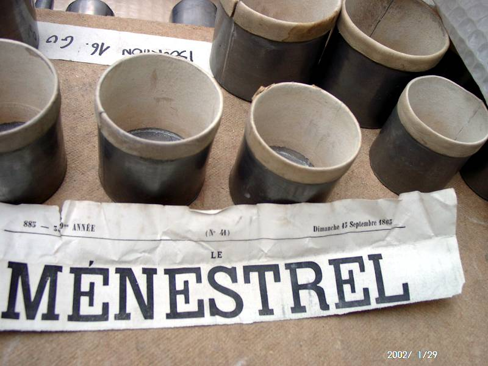
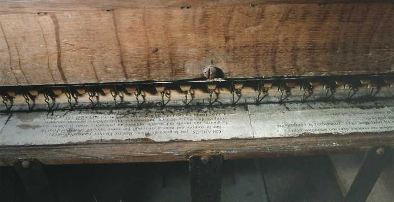
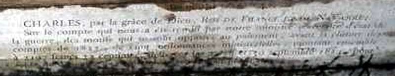
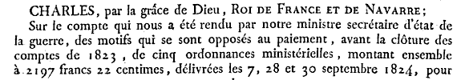
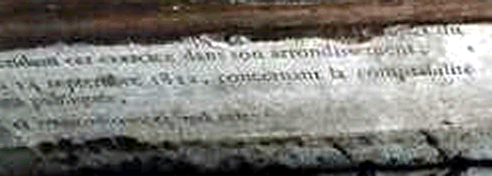
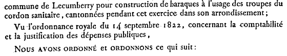

L'ordinateur
De l'utilisation de l'Internet
comme source de données princeps.

L'ordinateurDe l'utilisation de l'Internet
|
|
En restauration d'orgues historiques, il arrive souvent que les facteurs doivent manipuler des pièces couvertes de papiers ou de parchemins collés sur le bois. La raison en est simple, c'est là une technique couramment utilisée, autant pour parfaire une étanchéité que pour protéger un peu le bois, dans lequel on fait passer un courant d'air, d'un apport hygrométrique trop important. Pour ce faire, les anciens usaient très fréquemment (sinon toujours, avant le xixe siècle) de matériau de récupération. Il n'est ainsi pas rare que l'on puisse lire des textes manuscrits écrits sur du papier, généralement filigrané, voire du parchemin pour les instruments les plus anciens.
Il ne s'agit toutefois pas toujours de manuscrit, mais, quelquefois, de textes imprimés. J'ai, par exemple, souvenir d'avoir eu à ouvrir les panneaux d'une boite expressive d'un orgue datant des années 20 du xxe siècle, formés de cadres de bois plaqués d'une sorte de contreplaqué de très mauvaise qualité et, surtout, bourrés de papier journaux. Apprentis, nous avions pu lire et regarder les publicités savoureuses des dernières technologies de l'époque ainsi que nous extasier devant ces journaux de mode dans un état de conservation remarquable qui nous montraient cette période d'entre deux guerres, avec ces dames aux chapeaux cloche et ces messieurs en redingotes. Les journaux possédaient encore leurs couvertures et quoique certains étaient déchirés, il était possible d'en déterminer l'origine sans encombre.
Mais ce n'est pas toujours le cas et deux expériences aussi récentes que récurrentes me poussent à écrire ici un petit article, autant pour exprimer mon admiration de l'Internet que pour communiquer à qui en aura le besoin ce retour d'expérience qui peut être utile à chacun se trouvant dans la même situation.
« Le Ménestrel »
Au début de l'hiver dernier, Laurent Plet m'a demandé de l'aider à la mise en page d'un article sur « Les caractéristiques sonores des orgues Cavaillé-Coll » destiné à être publié dans la revue belge Orgelkunst. Alors que nous cherchions ensemble des photographies pour illustrer son propos, il me communiqua celle d'un papier journal utilisé pour assurer l'étanchéité d'une calotte de tuyau de Bourdon 16' du clavier de Grand Orgue de l'orgue de l'abbaye de Royaumont.
 La photographie (qui m'était communiquée en grande définition) possédait un énorme avantage : elle me montrait l'en-tête d'un journal avec sa date de parution, son numéro et son année dans cet état de conservation exceptionnel que possèdent les papiers qui n'ont pas eu à souffrir l'agression des ultra-violets. S'il est entendu que ce genre de trouvaille, en restauration, ne permet en aucune manière de dater en tout ou en partie un instrument, il reste que cela peut permettre de remettre en contexte, ce qui, de toutes façons ne peut être considéré que comme de la récupération d'une époque par une autre. Dans ma vie, j'ai ainsi pu aussi voir un abécédaire du xive siècle qui avait été récupéré comme parchemins utilisés en fond de grille dans des sommiers, eux-mêmes clairement datés du xviiie. La chose, pour être courante, ne manque pas d'être toujours considérée avec la retenue interprétative que doit posséder tout restaurateur.
L'orgue de l'abbaye de Royaumont ne pose pas de problème de datation ; il est acquis de manière très étayée qu'il a été construit en 1864. Le journal photographié était lui-même clairement daté de 1863. Je me suis donc tout de suite dit qu'il serait assez extraordinaire d'en retrouver une édition, non pour conforter quelque datation que ce soit, mais bien pour m'imprégner d'une ambiance — sinon d'un esprit — d'une époque donnée, en l'occurrence précisément celle de la construction de cet instrument.
La Bibliothèque Nationale de France (BNF) fait depuis maintenant des années un travail remarquable de numérisation des publications imprimées, libres de copyright, qu'elle rend accessible très simplement au travers de son site dédié Gallica. Je me suis donc dit que le journal « Le Ménestrel » s'y trouvait peut-être et je suis donc parti à la pèche, assez amusé je dois dire par cette recherche à temps perdu, mais dont le fruit pouvait être aussi nourrisseur de savoir que de plaisir de la découverte.
Le moteur de recherche de Gallica pourrait, à l'avenir, être amélioré (et on verra plus loin pourquoi) mais une recherche commence toujours assez simplement. J'ai donc tapé très prosaïquement les mots « Le Ménestrel » dans le champ approprié de la page d'accueil du site pour obtenir une liste de réponses triées par le serveur. Les trois premières entrées ne correspondaient pas à ce que je cherchais mais la quatrième me laissait croire à l'existence de ce périodique, dont on m'informait déjà que la parution a eu lieu de 1833 à 1940.
D'un lien, j'accédais à tous les volumes du périodique pour en obtenir la liste des années. Toujours d'un clic de souris, je cherchais la liste des numéros de 1863 et, le cœur battant, je me retrouvais avec la possibilité d'afficher sur mon écran la première page du numéro du 13 septembre 1863.
C'est à ce moment-là que l'on juge l'Internet comme autre chose qu'un repaire de pervers pédophilo-nazi-terroristes comme beaucoup aimeraient nous le laisser croire... Rapidement, je téléchargeais le numéro en question au format PDF (copie sur le présent site) pour en retravailler la structure et en extraire les pages et, très fier de mon coup, communiquer le tout à Laurent qui s'empressa de s'extasier sur l'article consacré aux trilles (page 329) qui ne manque pas, lui non plus, d'intérêt.
« Comptes généraux présenté par le ministre secrétaire d'état de la guerre »
Une aventure du même ordre vient de m'arriver très dernièrement. Consultant un sujet publié sur le forum Web « L'Orgue Libre » je découvris une photographie postée par Didier Guiraud de Willot qui attira aussitôt mon attention.
 Sitôt vue, sitôt enregistrée sur le disque dur de mon ordinateur. Pour être adaptée à la largeur d'un écran moyen, et parce que Didier ne pensait pas, je suppose, qu'il fut possible d'en faire une utilisation autre qu'une simple lecture sans véritable analyse postérieure, l'image publiée est loin de posséder une grande définition. Seulement, l'auteur du post y spécifiait la première ligne en citation : « Charles, par la grâce de Dieu, Roi de France et de Navarre » ce qui m'a laissé entendre que l'on pouvait, quand même, tenter de faire une recherche sur le sujet.
Avec un logiciel de manipulation de dessin (The Gimp), j'ai commencé par recadrer l'image, la retourner de 180 degrés et lui donner plus de contrastes. La formule donné par Didier devenait plus lisible et surtout on pouvait commencer à prendre note de plusieurs choses sur les mots déchiffrables :
- Le nom « CHARLES » est écrit en capitales.
- Les mots « Dieu », « Roi », « France » et « Navarre » possèdent une majuscule.
- On peut lire au début de la deuxième ligne les mots : « Sur le compte qui nous a été [...] ».
- La troisième ligne commence par les mots « la guerre [...] ».
- La quatrième ligne commence par les mots « comptes de [...] ».
- Les deux premières lignes ont un retrait à droite en comparaison des quatre suivantes.
Il faut ici s'arrêter un instant afin d'ouvrir une parenthèse sur l'usage technique du moteur de recherche Google. Le site met à disposition un mode d'emploi de la recherche évoluée, malheureusement fort peu connu dans nos milieux organologiques. C'est dans cette page d'aide que l'on peut s'instruire de l'importance des guillemets : « Lorsque vous placez plusieurs mots entre guillemets (par exemple, "mots entre guillemets"), Google les considère comme une seule chaîne de caractères et recherche uniquement les documents qui contiennent ces mots dans la même séquence ».
Faire une recherche Google sur « Charles, par la grâce de Dieu, Roi de France et de Navarre » sans placer de guillemets amène, à l'instant de la rédaction de ces lignes, environ 97 000 résultats. Placer des guillemets en début et fin de formule en réduit le nombre à environ 19 700. On se rend alors compte que cette formulation est des plus employée et qu'il va falloir pousser la demande pour avoir moins de bruit... De même, on apprend très vite avec une recherche Google sur la formulation « "Sur le compte qui nous a été" » qu'elle est extrêmement courante nous instruisant encore du mot suivant qui peut être « remis », mais beaucoup plus généralement « rendu ».
Cumulant les deux recherches, Google ne renvoi plus que six résultats, spécifiant tout de même avoir « ignoré certaines pages à contenu similaire ». Les deux premiers liens renvoient bien à un ouvrage paru en 1826 mais la seule disposition des mots démontre que ce n'est pas la page que l'on cherche puisque les troisième et quatrième lignes ne commencent pas respectivement par les mots « la guerre » et « comptes de », ce qui nous fait rejeter ces pages aussitôt. Toujours entre guillemets, il faudra rajouter les mots « "la guerre" » pour voir apparaître, en haut de la liste de résultats, le bon lien, sur le bon ouvrage, à la bonne page.
On peut alors revenir à l'image originale et faire des comparaisons entre les deux pour juger à quel point tout concorde autant pour les mots illisibles que leur mise en page et autres retraits de paragraphes.

Poursuivant, il faut aussi noter le titre de l'ouvrage : « Comptes généraux présenté par le ministre secrétaire d'état de la guerre ». Google permet de cliquer sur la couverture pour cela (en haut, à droite). Cela permet de refaire une recherche dans un autre contexte. Pour ma part, c'est vers le site Gallica que je me suis dirigé. Il y a une raison à cela : Google est une entreprise beaucoup plus mercantile que la BNF, apposant son logo sur chaque page numérisée. S'il y a un fichier à télécharger, c'est donc d'abord à la numérisation de la BNF, beaucoup plus respectueuse de la libération du droit d'auteur — bien qu'encore critiquable — que je donnerai ma préférence.
La deuxième page à suivi la même méthode ; sur elle je pouvais reconnaître les mots « dans son arrondissement », « 14 septembre » et « concernant la comptabilité ». Par ma découverte de la première page, je savais que les mots « 14 septembre 1822 » apparaissaient un nombre considérable de fois dans l'ouvrage ; il y avait donc de forte chances que l'on se retrouve dans le même, à fortiori parce qu'on imagine mal le facteur puiser dans trente sources de papier. La recherche Google a été très simple et m'a mené directement à la page 290, reconnaissant bien la bonne disposition des mots au pesé comparatif de la photo originale communiquée par Didier.

Tout ceci n'est possible que parce que Google a procédé à une reconnaissance optique des caractères des ouvrages qu'il a numérisé primitivement de manière graphique (photographie des pages). Cet OCR est, de plus, fait sur des typographies anciennes avec les moyens que l'on connaît de la firme américaine et dont on peut juger qu'ils ne sont pas exactement minimalistes. C'est à tel point qu'en aucun cas, Gallica ne peut actuellement revendiquer la puissance de recherche de Google. C'est parce que Google m'a donné le titre des « Comptes généraux présenté par le ministre secrétaire d'état de la guerre », que j'ai en pu faire la recherche sur Gallica. Et encore, cette dernière ne m'a donné le bon résultat qu'en neuvième position alors que j'étais parfaitement certain du titre, ceci sans pour autant le respecter scrupuleusement mais donné dans la forme « Comptes généraux présentés par le ministre de la guerre pour l'exercice »... Mieux que cela, une fois l'ouvrage localisé, Google permet d'y faire une recherche sémantique ciblée sur lui et lui seul renvoyant le résultat en mode image surligné...
Pour des raisons culturelles et déontologiques évidentes, je n'aime pas Google ; c'est, à mon avis, une firme mercantile qui prône des valeurs de Liberté qu'elle bafoue à l'envi. Mais force est de constater que la puissance de l'argent fait des miracles... Il faut donc s'en servir au maximum sans jamais se séparer de l'idée que l'on se damne toujours un peu en utilisant ce type de services... Mais Google a un mérite : celui de démontrer que les numérisations au format image ne présentent que peu d'intérêt si elles ne sont pas accompagnées de leurs corollaires au format texte, le seul à pouvoir offrir la possibilité d'une recherche sémantique sur le texte. Même accomplie de manière imparfaite, la reconnaissance des caractères permet des miracles dans la recherche. C'est aussi la raison pour laquelle je crois secondaire la publication de l'ouvrage du bénédictin mauriste au format image (comme beaucoup m'en ont déjà fait la demande) puisque l'intérêt des textes numériques me semble d'abord se trouver dans la possibilité d'en faire la manipulation, l'extraction, la recherche ou la remise en page.
On pourra peut-être s'interroger sur la raison et l'utilité de telles démarches tant il est évident qu'elles peuvent apparaître éloignées de la facture d'orgues proprement dite. Pourtant, il me semble que connaître l'origine d'un texte que l'on sait avoir été contemporain d'une époque, remet le chercheur dans un bain culturel qui est très loin de me sembler superflu... C'est une technique moderne pour laquelle on aurait tort de se faire l'économie puisqu'aussi bien elle coûte aussi peu qu'elle ne détruit les instruments sur lesquels on est amené à travailler. À partir du moment où l'on trouve un écrit fait de manière imprimée, je suis convaincu que l'on devrait avoir plus souvent le réflexe d'en rechercher la source. La numérisation des ouvrages imprimés tant sur Gallica que sur Google books est une aubaine dont on a tort de se passer, à fortiori parce qu'elle augmente chaque jour. Cela nous est offert ; il faut en profiter.
Car c'est il me semble important de ne pas passer à côté des détails, particulièrement quand on sait peu de chose sur un instrument. Autant il est facile d'imaginer un harmoniste, abonné à une revue musicale comme « Le Ménestrel », travailler l'étanchéité des calottes de bourdon avec ses vieux journaux, autant on peut se poser la question sur le pourquoi des « Comptes généraux présenté par le ministre secrétaire d'état de la guerre » ? Chez qui le facteur de cet orgue (dont on ne connaît même pas le nom) a pris ces feuilles, mettons dix ou vingt ans après leurs publications, pour en tapisser la laye de son sommier ? Pas chez un paysan bien sûr ! Ce n'est pas un texte liturgique comme c'est généralement le cas. Chez un notaire ? Dans une administration royale ? Qui pouvait avoir intérêt à posséder dans ses archives ou dans sa cave un tel ouvrage dont, au contraire du Ménestrel, il est facile de juger la lecture sans le moindre intérêt ? Il nous faut réfléchir, car rien n'est complètement dû au hasard et, à défaut d'avoir une piste, nous en avons tout de même une ébauche. J'ai bien conscience que ce n'est qu'un détail ; mais le présent article se propose de souligner encore à quel point on aurait tort de se passer de cette technique contemporaine, car il n'y a pas de musique sans Histoire, particulièrement dans l'orgue, et qu'à aucun moment on ne peut se permettre de délaisser une technique qui peut apporter ouverture et compréhension d'un fait.
Quarante minutes exactement1 séparent le post de Didier Guiraud de Willot de ma réponse qui fait je crois plus que prouver que je ne vais pas au bal le samedi soir... C'est autant un hasard (parce que je lis assez rarement les forums du Web) qu'un très beau « coup de bol ». La découverte du journal « Le Ménestrel » m'avait déjà étonné par sa facilité ; celle des « Comptes généraux » est plus complexe dans sa démarche mais reproductive une fois établie la méthode pour en trouver l'accès. Il y en aura forcément d'autres qui ne manqueront pas de l'affiner, à fortiori parce que l'Internet est encore fort jeune et que l'on sait bien que le réseau est lui aussi fort loin d'avoir la puissance qu'il offrira dans les prochains siècles. Nous voici donc précurseurs d'un outil d'avenir, propre à nous apporter compréhension du passé ; une idée qui m'est chère et que je continuerai à développer ici, comme je l'ai toujours fait.
Celle, juin 2011.
---------------------------------------------------- _ | | _ Sébastien | || | _ Matthieu | || || | _ Cosson | || || || | _ Jacquet | || || || || | _ | || || || || || | _ | || || || || || || | | || || || || || || | ,-~~-.___. | || || || || || || |___ / | . \ |_||_||_||_||_||_||_| /| ( ) O |_||_||_||_||_||_||_| / | \_/-. ,----' / V V V V V V V / | ==== _/____________________ / / / \-'~; /| The Organbuilder | / / __/~| /_| and his organ | / o=(_______| |_|_____________________|/ ---------------------------------------------------- Site web : http://www.hydraule.org E-mail: smcj@hydraule.org ----------------------------------------------------
1 Ma réaction fut postée le dimanche 28 mai à minuit 11, juste entre cette d'Yves Caralli (samedi 28 mai à 23 heures 38) et Stefano Ghezzi (dimanche 29 mai à 15 heures 10). Elle donnait bien entendu suite au post de Didier Guiraud de Willot publié le samedi 28 mai à 23 heures 29. Elle a été supprimé par erreur par l'administrateur du forum qui a eu un peu de mal à en saisir la teneur... Mais il en reste témoignage dans la deuxième page du fil qui permet, entre autres, de ne pas s'écarter du sujet de l'instrument abordé.